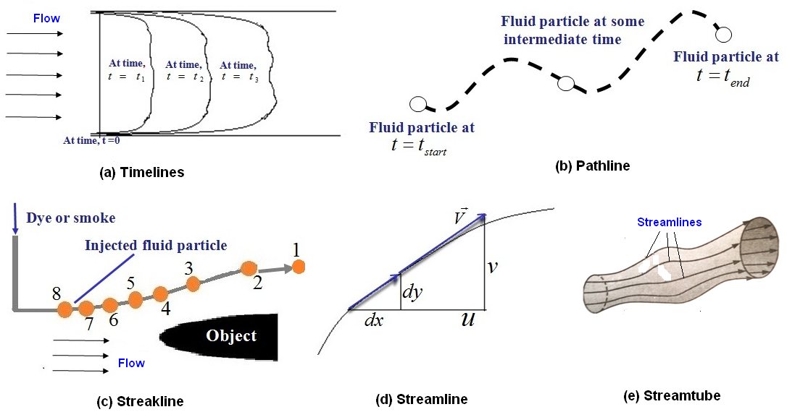

Q. 7 Write short notes on -(i) Path line (ii) streak line (iii) stream lines and stream tube
Answer :
Path Lines - A path line is the line traced by a single fluid particle as it moves over a period of time. Thus a path line indicates the direction of velocity of the same fluid particle at successive instants of time. While a streamline shows the direction of velocity of a number of fluid particles at the same instant of time.
A fluid particle always moves tangent to the streamline thus, for steady flow, the path lines and streamlines are identical.
Streak Line – The instantaneous pictures of the position of all fluid particles, which have passed through a given point at some previous time are called streak lines or filament lines.
In experimental work, often a colour or dye or some other substance (such as smoke in case of gases) is injected into the flowing fluid, in order to trace the motion of the fluid particles. The resulting trail of colour is known as streak line.
In steady flow, since there is no change in the flow pattern, a streak line is same as a streamline and the path line of a particle. In unsteady flow a streak line at an instant is the locus of end points of particle paths (or path lines) that started at the instant the particle passed through the injection point.

Fig. 7.1 shows the streak lines in a possible unsteady flow situation and other information.
For a steady flow, all above mentioned three lines, viz. streamline, path line and streak line are identical.
Streamline– A streamline is an imaginary line drawn through a flowing fluid in such a way that the tangent to it at any point gives the direction of the velocity of flow at that point. Since a fluid is composed of fluid particles, the pattern of flow of fluid may be represented by a series of streamlines, obtained by drawing a series of curves through the flowing fluid such that the velocity vector at any point is tangential to the curves.
A stream tube is a tube imagined to be formed by a group of streamlines passing through a small closed curve, which may or may not be circular as shown in fig. 7.1 .
A stream tube with a cross-sectional area small enough for the variation of velocity over it to be negligible is termed as a stream filament. A stream tube consists of number of such stream filaments. Since the stream tube is bounded on all sides by streamlines and since the velocity has no component perpendicular to a streamline, there can be no flow across the bounding surface (called stream surface) cf the stream tube. The stream surface thus functions as if it were a solid wall. The shape of stream tube changes from one instant to another because of change in the position of streamlines.
Flow in pipes and nozzles are the examples of stream tube. The concept of stream tube is quite useful in analyzing several fluid flow problems, since the entire flow field may be divided into a large number of stream tubes, thus yielding a clear picture of the actual pattern of flow.